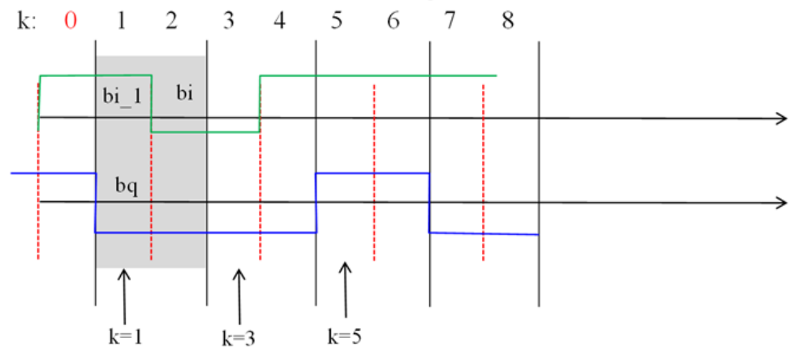

Lab Exercise 6: FSK-MSK#
The purpose of this lab exercise is to simulate and analyze Frequency Shift Keying (FSK) and Minimum Shift Keying (MSK) systems. Students will compare coherent and non-coherent demodulation, calculate bit error rates, and examine the spectral properties of these modulation schemes. The exercise also includes an optional task to compare MSK and QPSK systems in terms of bit error rate and bandwidth.
Setup#
Live Code
Press the following button to make python code interactive. It will connect you to a kernel once it says “ready” (might take a bit, especially the first time it runs).
Importing packages we will need later in Python#
import numpy as np
import matplotlib.pyplot as plt
import random
import scipy.signal
from scipy.signal import welch
import scipy.special
from scipy.special import erfc
import math
from math import log, log2, sqrt
import ipywidgets as widgets
from ipywidgets import IntSlider, FloatSlider, interactive, Layout, Dropdown, IntText, HBox, VBox, Output
from IPython.display import display, clear_output
import time
print("Libraries added successfully!")
Part 1:#
Run code 6.1 of the notes (step-by-step, not by calling the function) for M=16 and confirm the obtained number of errors for two different values of the normalized signal-to-noise ratio
Code 6.1
def fsk_errors(bps, Nsymb, ns, EbNo_dB):
"""
Calculate the number of errors for an FSK modulation scheme.
Parameters:
bps (int): bits per symbol
Nsymb (int): number of simulated symbols
ns (int): number of samples per symbol (oversampling)
EbNo_dB (float): normalized signal-to-noise ratio in dB
Returns:
int: number of errors
"""
M = 2 ** bps # number of different symbols
BR = 1 # Baud Rate
fc = 2 * M * BR # RF frequency
# Derived parameters
nb = bps * Nsymb # number of simulated data bits
T = 1 / BR # one symbol period
Ts = T / ns # oversampling period
# M frequencies in "non-coherent" distance (BR)
f = fc + BR * ((np.arange(1, M + 1)) - (M + 1) / 2)
# awgn_channel
SNR_dB = EbNo_dB + 10 * np.log10(bps) - 10 * np.log10(ns / 2) # in dB
SNR = 10 ** (SNR_dB / 10)
# input data bits
y = np.random.randint(0, 2, nb)
x = y.reshape((Nsymb, bps))
t = np.arange(0, Nsymb * T, T) # time vector on the T grid
tks = np.arange(0, T, Ts)
# FSK signal
s = []
A = np.sqrt(2 / T / ns)
for k in range(Nsymb):
fk = f[int("".join(map(str, x[k, :])), 2)]
tk = (k - 1) * T + tks
s.append(A * np.sin(2 * np.pi * fk * tk))
s = np.concatenate(s)
# Add noise to the FSK (passband) signal
noise = np.sqrt(1 / (2 * SNR)) * np.random.randn(len(s))
s_noisy = s + noise
# FSK receiver
# coherent demodulation
xr = []
for k in range(Nsymb):
tk = (k - 1) * T + tks
sk = s_noisy[(k * ns):(k * ns + ns)]
smi = []
for fi in f:
si = np.sin(2 * np.pi * fi * tk)
smi.append(np.sum(sk * si))
j = np.argmax(smi)
xr.append([int(b) for b in bin(j)[2:].zfill(bps)])
xr = np.array(xr)
# count errors
err = x != xr
errors = np.sum(err)
return errors
function errors=fsk_errors(bps,Nsymb,ns,EBNo)
%%%%%%%%%%%%%%%%%%%%%%%%%%%%%%%%%%%%%%%%%%%%%%%%%%%%%%%%%%%%%%%%%%%%%%%
% Input parameters
% bps: bits per symbol, Nsymb: numb of simulated symbols
% ns: number of samples per symbol (oversampling)
% EbNo: normalized signal-to-noise ratio, in dB
M=2^bps; % number of different symbols
BR=1; % Baud Rate % Baud Rate
fc=2*M*BR; % RF Frequency % RF frequency
%% Derived parameters
nb=bps*Nsymb; % number of simulated data bits
T=1/BR; % one symbol period
Ts=T/ns; % oversampling period
% M frequencies in "non-coherent" distance (BR)
f=fc+BR*((1:M)-(M+1)/2);
% awgn_channel
SNR=EbNo+10*log10(bps)-10*log10(ns/2); % in dB
% input data bits
y=randint(nb,1);
x=reshape(y,bps,length(y)/bps)';
t=0:T:length(x(:,1))*T]'; % time vector on the T grid
tks=[0:Ts:T-Ts]';
% FSK signal
s=[];
A=sqrt(2/T/ns);
for k=1:length(x(:,1))
fk=f(bi2de(x(k,:))+1);
tk=(k-1)*T+tks;
s=[s; sin(2*pi*fk*tk)];
end
% add noise to the FSK (passband) signal
s=awgn(s,SNR, 'measured');
%% FSK receiver
% coherent demodulation
th=0;
xr=[];
for k=1:length(s)/ns
tk=(k-1)*T+tks;
sk=s((k-1)*ns+1:k*ns);
smi=[];
for i=1:M
si=sin(2*pi*f(i)*tk);
smi(i)=sum(sk.*si);
end
[m,j]=max(smi);
xr=[xr;de2bi(j-1,bps)];
end
% count errors
err=not(x==xr);
errors=sum(sum(err));
end
Part 2:#
Complete the above code in order to also simulate the non-coherent FSK
Tip
Add random phase to the received signal, before demodulation.
Code 6.2
def fsk_errors(bps, Nsymb, ns, EbNo_dB, non_coherent=False):
"""
Calculate the number of errors for an FSK modulation scheme.
Parameters:
bps (int): bits per symbol
Nsymb (int): number of simulated symbols
ns (int): number of samples per symbol (oversampling)
EbNo_dB (float): normalized signal-to-noise ratio in dB
non_coherent (bool): flag to simulate non-coherent FSK demodulation
Returns:
int: number of errors
"""
M = 2 ** bps # number of different symbols
BR = 1 # Baud Rate
fc = 2 * M * BR # RF frequency
# Derived parameters
nb = bps * Nsymb # number of simulated data bits
T = 1 / BR # one symbol period
Ts = T / ns # oversampling period
# M frequencies in "non-coherent" distance (BR)
f = fc + BR * ((np.arange(1, M + 1)) - (M + 1) / 2)
# awgn_channel
SNR_dB = EbNo_dB + 10 * np.log10(bps) - 10 * np.log10(ns / 2) # in dB
SNR = 10 ** (SNR_dB / 10)
# input data bits
y = np.random.randint(0, 2, nb)
x = y.reshape((Nsymb, bps))
tks = np.arange(0, T, Ts)
# FSK signal
s = []
A = np.sqrt(2 / T / ns)
for k in range(Nsymb):
fk = f[int("".join(map(str, x[k, :])), 2)]
tk = (k - 1) * T + tks
s.append(A * np.sin(2 * np.pi * fk * tk))
s = np.concatenate(s)
# Add noise to the FSK (passband) signal
noise = np.sqrt(1 / (2 * SNR)) * np.random.randn(len(s))
s_noisy = s + noise
if non_coherent:
# Add random phase shift to the received signal for non-coherent demodulation
phase_shift = 2 * np.pi * np.random.rand()
s_noisy = s_noisy * np.cos(phase_shift) - np.sin(phase_shift)
# FSK receiver
# coherent demodulation
xr = []
for k in range(Nsymb):
tk = (k - 1) * T + tks
sk = s_noisy[(k * ns):(k * ns + ns)]
smi = []
for fi in f:
si = np.sin(2 * np.pi * fi * tk)
smi.append(np.sum(sk * si))
j = np.argmax(smi)
xr.append([int(b) for b in bin(j)[2:].zfill(bps)])
xr = np.array(xr)
# count errors
err = x != xr
errors = np.sum(err)
return errors
function errors = fsk_errors(bps, Nsymb, ns, EbNo, non_coherent)
%%%%%%%%%%%%%%%%%%%%%%%%%%%%%%%%%%%%%%%%%%%%%%%%%%%%%%%%%%%%%%%%%%%%%%%
% Input parameters
% bps: bits per symbol, Nsymb: number of simulated symbols
% ns: number of samples per symbol (oversampling)
% EbNo: normalized signal-to-noise ratio, in dB
% non_coherent: flag to simulate non-coherent FSK demodulation
if nargin < 5
non_coherent = false; % default to coherent demodulation
end
M = 2^bps; % number of different symbols
BR = 1; % Baud Rate
fc = 2 * M * BR; % RF frequency
% Derived parameters
nb = bps * Nsymb; % number of simulated data bits
T = 1 / BR; % one symbol period
Ts = T / ns; % oversampling period
% M frequencies in "non-coherent" distance (BR)
f = fc + BR * ((1:M) - (M + 1) / 2);
% awgn_channel
SNR = EbNo + 10 * log10(bps) - 10 * log10(ns / 2); % in dB
% input data bits
y = randi([0, 1], nb, 1);
x = reshape(y, bps, length(y) / bps)';
% time vector on the T grid
tks = 0:Ts:T-Ts;
% FSK signal
s = [];
A = sqrt(2 / T / ns);
for k = 1:length(x(:,1))
fk = f(bi2de(x(k,:)) + 1);
tk = (k - 1) * T + tks;
s = [s, A * sin(2 * pi * fk * tk)];
end
% add noise to the FSK (passband) signal
s_noisy = awgn(s, SNR, 'measured');
if non_coherent
% Add random phase shift to the received signal for non-coherent demodulation
phase_shift = 2 * pi * rand;
s_noisy = s_noisy * cos(phase_shift) - sin(phase_shift);
end
% FSK receiver
% coherent demodulation
xr = [];
for k = 1:Nsymb
tk = (k - 1) * T + tks;
sk = s_noisy((k-1) * ns + 1:k * ns);
smi = [];
for i = 1:M
si = sin(2 * pi * f(i) * tk);
smi(i) = sum(sk .* si);
end
[~, j] = max(smi);
xr = [xr; de2bi(j-1, bps)];
end
% count errors
err = ~isequal(x, xr);
errors = sum(sum(err));
end
Part 3:#
Use your new function to simulate a 16-FSK system and plot the Pb vs Eb/No curves for coherent and non-coherent demodulation (theoretical and from simulation).
import numpy as np
import matplotlib.pyplot as plt
from scipy.signal import welch
def bin2int(x):
y = 0
for i,j in enumerate(x):
y += j<<i
return y
def method(byte,bps):
arr = []
for i in range(bps, 0, -1):
arr.append((byte & 1<<i)>>i)
return arr
def maxInd(p):
b=max(p)
k=0
for h in range(0,len(p)):
if (p[h]==b):
k=h
return k
def bi2de(test_list):
res = 0
for ele in test_list:
res = (res << 1) | ele
return res
def addAWGN(x, SNR_dB):
L=len(x)
SNR = np.power(10,(SNR_dB/10)) #SNR to linear scale
Esym=np.sum(abs(x)*abs(x))/L #Calculate actual symbol energy
N0=Esym/SNR #Find the noise spectral density
noiseSigma =math.sqrt(N0)#Standard deviation for AWGN Noise when x is real
n = noiseSigma*np.random.randn(1,L) #computed noise
y = x + n #received signal
return y
#Simulation of errors in MFSK
def fsk_errors(coherence,bps,Nsymb,nsamp,EbNo):
#coherence=True
#bps=4
#Nsymb=2000
#nsamp=16
#EbNo=5
#Input Parameters
# bps: bits per symbol
# Nsymb: number of symbols to be simulated
# nsamp: number of samples per symbol (oversampling)
# EbNo: normalized signal-to-noise ratio (in dB)
M=np.power(2,bps) #Number of different symbols (modulation order)
BR=1 #Baud Rate
fc=2*M*BR #RF Frequency
#nbits=bps*Nsymb number of simulated data bits
T=1/BR #one symbol perio
Ts=1/nsamp # oversampling period
Fs=1/Ts #sampling frequency
k=np.arange(1,M+1)
f=fc +BR*(k-(M+1)/2) # M frequencies in "non-coherent" distance (BR)
SNR = EbNo + 10*np.log10(bps) - 10*np.log10(nsamp/2) # AWGN channel noise (in dB)
x = np.transpose(np.random.randint(2, size=(bps,Nsymb))) # Random binary data stream of (bps)x(Nsymb) bits
y = [bin2int(z[::-1]) for z in x] #Sequence of symbols to be sent
tks = np.arange(0,1,Ts)
tks=np.transpose(tks)
# Sender: FSK signal
s=np.zeros((1,len(tks)*Nsymb+1))
#Create properly (f(i)) frequency modulated signal
for k in range(0,len(x[:, 1])):
# len(x[:, 1]) == Nsymb
index=bi2de(x[k,:])
#print(index)
fk=f[index]
tk = k*T + tks
r= k*len(tk) + np.arange(1,len(tk)+1)
#print(r)
if coherence:
th = 0
else:
th = 2*np.pi*np.random.uniform(0,1,1)
s[0,r]=np.sin(2*np.pi*fk*tk + th)
#print(s)
#freq, Pxx_den =signal.welch(s,Fs)
#Pxx_den=np.transpose(Pxx_den)
#plt.figure(figsize=(13,15))
#plt.semilogy(freq, Pxx_den)
#plt.ylim([0.5e-3, 1])
#plt.xlabel('frequency [Hz]')
#plt.ylabel('PSD [V**2/Hz]')
#plt.grid()
#plt.show()
#figure(1); welch(s, [], [], [], Fs/Td);
# Channel: Noise addition to the bandpass signal
snoisy = addAWGN(s,SNR)
#freq, Pxx_den =signal.welch(snoisy,Fs)
# Pxx_den=np.transpose(Pxx_den)
#plt.figure(figsize=(13,15))
#plt.semilogy(freq, Pxx_den)
#plt.ylim([0.5e-3, 1])
#plt.xlabel('frequency [Hz]')
#plt.ylabel('PSD with Gaussian Noise [V**2/Hz]')
#plt.grid()
#plt.show()
#figure(2); welch(snoisy, [], [], [], Fs/Td);
# Receiver: FSK signal
xr=np.zeros((int(len(tks)*Nsymb/nsamp),bps))
for k in range(1,int(len(tks)*Nsymb/nsamp)): #len(snoisy)/nsamp == Nsymb
tk = k*T + tks
sk = np.take(snoisy, range((k-1)*nsamp, k*nsamp))
smi = []
#Coherent demodulation MLE
if coherence:
for i in range(0,M):
si=np.sin(2*np.pi*f[i]*tk)
smi[0:]=sum([np.multiply(sk,si)])
# Non-coherent demodulation MLE
else:
for i in range(1,M):
si=np.sin(2*np.pi*f[i]*tk)
sq=np.cos(2*np.pi*f[i]*tk)
smi[0:]=np.power(np.power(sum([np.multiply(sk,si)]),2)+np.power(sum([np.multiply(sk,sq)]),2),0.5)
p=np.transpose(smi)
j=maxInd(p)
r=int(np.binary_repr(j, width=bps))
xr[k:] = method(r,bps) # convert in demodulation to binary
errors=0
#print(xr.shape)
for i in range(0,int(len(tks)*Nsymb/nsamp)):
p=0
for j in range(0,bps):
if (x[i,j]==xr[i,j]):
p=p+1
if(p!=bps):
errors=errors+1
return errors, s, snoisy
def theoretical_ber_coherent(M, EbNo):
return 0.5 * np.exp(-EbNo / 2)
def theoretical_ber_non_coherent(M, EbNo):
return 0.5 * np.exp(-EbNo / (M + 1))
# Simulation parameters
bps = 4 # for 16-FSK
Nsymb = 2000 # Reduced number of symbols to be simulated
nsamp = 128
EbNo_dB_range = np.arange(0, 15, 1) # Reduced number of points
ber_coherent_sim = []
ber_non_coherent_sim = []
ber_coherent_theory = []
ber_non_coherent_theory = []
for EbNo_dB in EbNo_dB_range:
errors_coherent, s_coherent, snoisy_coherent = fsk_errors(True, bps, Nsymb, nsamp, EbNo_dB)
errors_non_coherent, s_non_coherent, snoisy_non_coherent = fsk_errors(False, bps, Nsymb, nsamp, EbNo_dB)
ber_coherent_sim.append(errors_coherent / (Nsymb * bps))
ber_non_coherent_sim.append(errors_non_coherent / (Nsymb * bps))
EbNo = 10 ** (EbNo_dB / 10)
ber_coherent_theory.append(theoretical_ber_coherent(16, EbNo))
ber_non_coherent_theory.append(theoretical_ber_non_coherent(16, EbNo))
# Plotting the results
plt.figure(figsize=(10, 6))
plt.semilogy(EbNo_dB_range, ber_coherent_sim, 'o-', label='Coherent FSK (Simulation)')
plt.semilogy(EbNo_dB_range, ber_non_coherent_sim, 's-', label='Non-Coherent FSK (Simulation)')
plt.semilogy(EbNo_dB_range, ber_coherent_theory, 'o--', label='Coherent FSK (Theory)')
plt.semilogy(EbNo_dB_range, ber_non_coherent_theory, 's--', label='Non-Coherent FSK (Theory)')
plt.xlabel('Eb/No (dB)')
plt.ylabel('Bit Error Rate (BER)')
plt.title('BER vs. Eb/No for 16-FSK')
plt.grid(True, which='both', linestyle='--', linewidth=0.5)
plt.legend()
plt.show()
C:\Users\Sotiris\AppData\Local\Temp\ipykernel_15368\1001522890.py:165: DeprecationWarning: Insufficient bit width provided. This behavior will raise an error in the future.
r=int(np.binary_repr(j, width=bps))
Part 4:#
Plot the spectrum of the bandpass signal of question 3.
Ts = 1 / nsamp # oversampling period
Fs = 1 / Ts # sampling frequency
# Plotting the spectrum of the bandpass signal
f_coherent, Pxx_coherent = welch(s_coherent.flatten(), Fs, nperseg=1024)
f_non_coherent, Pxx_non_coherent = welch(s_non_coherent.flatten(), Fs, nperseg=1024)
plt.figure(figsize=(10, 6))
plt.semilogy(f_coherent, Pxx_coherent, label='Coherent FSK Spectrum')
plt.semilogy(f_non_coherent, Pxx_non_coherent, label='Non-Coherent FSK Spectrum')
plt.xlabel('Frequency (Hz)')
plt.ylabel('Power Spectral Density (V^2/Hz)')
plt.title('Power Spectral Density of the Bandpass Signal')
plt.grid(True)
plt.legend()
plt.show()
Part 5#
Note
Optional. Bonus 10% to Lab grade
Step 1:#
Based on Code 6.2 of the notes, simulate an MSK transmission system on a bandpass channel with a center frequency of 8 MHz and a transmission rate of 2 Mbps. Plot the spectrum of the bandpass signal and calculate (theoretically and by simulation) the BER, when Eb/No=10db.
Step 2:#
For the data of the previous question, find the values of the parameters of an equivalent (in terms of bit rate) QPSK system. Compare the two systems in terms of BER and bandwidth.
Tip
According to the figure below, for each odd k, the new bi (valid from the next even k) and bq are calculated. Based on these, the two new bits are calculated, xr(k)=bi_1bq and xr(k+1)=bibq. With precoding, bit xr_1 of the previous period (k-1) is also used.
